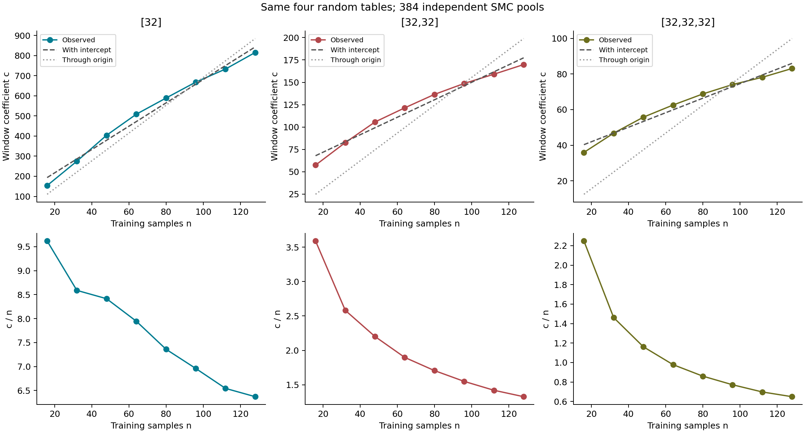
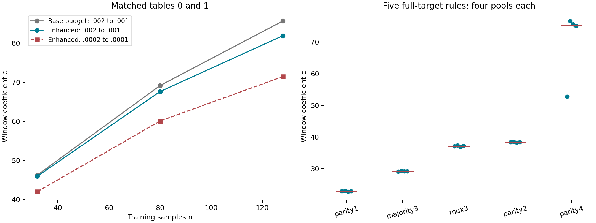
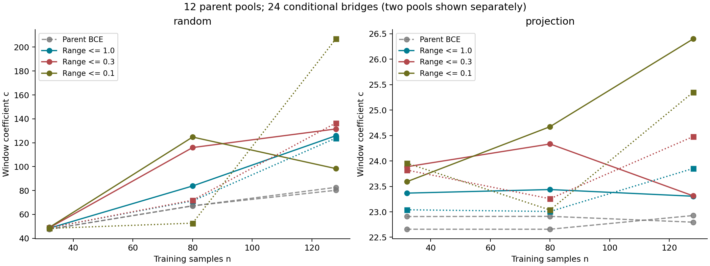
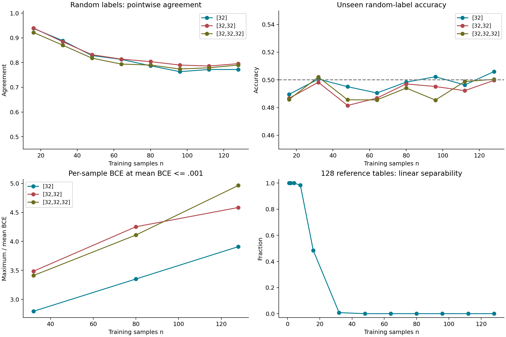

2026年10月更新： 本页保留原报告；跳转至新增实验、复核和边界。
范围与状态
用户提供results_8bit_random_memory_scaling_w16_v1_package (1).zip。本包为5090重新运行后的完整结果，不是此前4090 D的10项阶段包。
- 10档样本数：32、48、64、80、96、128、160、192、224、256。
- 每档8份随机数据，共80项，全部达到平均BCE≤0.001。
- 每个数据编号对应一张独立随机标签表及输入排列，同编号各n使用嵌套前缀。
- 网络8→16→16→1 tanh，433参数；0/1输入，标准Gaussian神经坐标，权重与bias均按fan-in缩放。
- 每项4副本×2048粒子，2次适应及12次固定更新，float32前向/粒子、float64 log体积，TF32关闭。
- 环境为RTX5090、torch 2.8.0+cu128、Python 3.12.3。采样循环累计17692.89秒，约4.915小时；启动及部分打包等另计。
- 本轮只读审计和离线统计，没有新增训练、SMC、自动recheck或失败seed微观分析。
统计口径
每份数据先按副本计算：c=[K(eps_low)-K(eps_high)]/log2(eps_high/eps_low)，再取该数据的副本中位数。之后对8份独立数据的系数求均值和标准差，不先平均体积。
主分析保留全部80项，包括有警告的项。数据集间SD、副本SD分别报告。副本共享自适应阈值与步长，不能将其SD当作严格置信区间。
末端0.002→0.001
单位：loss减半时负log2体积的增量。
| n | 8份数据均值 | 数据集间SD | 数据集间中位数 | 均值c/n | 窗口涉及采样报警的份数 |
|---|---|---|---|---|---|
| 32 | 54.33 | 3.96 | 52.78 | 1.698 | 0/8 |
| 48 | 68.14 | 3.49 | 68.16 | 1.420 | 0/8 |
| 64 | 79.93 | 2.87 | 79.80 | 1.249 | 0/8 |
| 80 | 90.70 | 4.69 | 90.67 | 1.134 | 0/8 |
| 96 | 100.76 | 7.17 | 101.64 | 1.050 | 0/8 |
| 128 | 118.47 | 6.59 | 118.29 | 0.926 | 0/8 |
| 160 | 141.53 | 5.86 | 143.98 | 0.885 | 2/8 |
| 192 | 164.24 | 8.91 | 164.28 | 0.855 | 1/8 |
| 224 | 209.61 | 36.37 | 196.11 | 0.936 | 4/8 |
| 256 | 253.67 | 62.20 | 220.39 | 0.991 | 6/8 |
线性关系仍在，但不是每份数据都同样干净
全部10档均值拟合为：
七个相邻loss窗口的均值曲线，R²范围约0.9724至0.9871。8条独立数据轨迹在最深窗口均随n逐档增加，72/72个相邻增量为正。
最深窗口逐数据轨迹的R²依次约为0.9938、0.9959、0.9854、0.8363、0.9252、0.9204、0.9938、0.9897。因此不是只有第1份数据呈现近似线性；同时也不能声称每份都接近完美直线。
数据集间中位数曲线作为稳健性参考，拟合为c≈0.72409n+30.927，R²≈0.9960。这不替代均值主结果，更不意味着剔除高值。
最大两档的额外波动
n=256的8份系数依次为218.15、222.64、208.38、374.34、306.35、285.08、216.31、198.11。第4、5、6份明显拉高均值；其中并非每份都触发了同一类警告，不能用警告标签直接判断哪些是“假高值”。
观察到这一现象后做范围敏感性分析：仅n≤192的均值拟合为c≈0.66645n+35.617，R²≈0.9978；其外推对224和256的预测分别比实际均值低约13.4%和23.0%。这是事后诊断，不包装成预先选择的主区间。
最大两档同时出现较大副本分歧，例如第4份n=224的系数副本SD约24.8%，第6份n=256约31.0%。433参数对256个单输出样本只是轻度过参数化。当前无法区分真实数据难度、容量压力和采样混合不足的贡献。
尾部变化减小
在预定的7个相邻窗口中，80/80条曲线的局部系数都逐步下降。
- 从0.2→0.1窗口到0.1→0.05窗口，系数下降的中位数约17.39%。
- 从0.005→0.002窗口到0.002→0.001窗口，下降的中位数约3.79%。
- 最后一次下降的10%至90%分位为3.02%至4.65%，全范围为0.34%至5.55%。
- 78/80条最后变化不超过5%，80/80条不超过10%，没有末窗口反而上升的例子。
这支持有限低loss区间的斜率逐渐稳定，但不证明真正epsilon→0时的极限，也不直接测出了微观实现复杂度分布。
独立核验
- 全部1200个快照文件、38400组抽存参数，独立NumPy float64前向复算通过。
- 最大logit差约1.77e-5，最大平均BCE差约4.44e-8；无分类符号变化，无观测到的loss约束违例。
- 末端快照训练标签全部正确，全部任务报告的终点粒子完整拟合比例均为1。
- 逐层及节点K未出现负增量；各数据的窗口系数与包内结果完全一致，汇总均值最大差约5.68e-14。
- 8份完整随机数据的seed、标签及嵌套顺序独立重建一致，数据hash全部不同；不同标签表的Hamming距离为105至143。
- 这些核验确认实现和约束一致，不认证全局SMC质量估计无偏。
换GPU的一致性参考
同一第1份数据在4090 D和5090的末端系数差异约0.14%至6.23%，多数较小。n=256从216.95变为218.15，变化约0.55%；n=192的变化较大，约-6.23%。
这一份的采样时间从3045.29秒变为2197.07秒，速度约1.386倍。数据与种子相同，不能把它计作第9份独立随机数据，也不作为独立随机流复测。
为什么这是复杂度定义的外部校准
随机标签没有可复用的目标规则；增加独立样本，通常就增加需要分别记住的约束。这里的样本数n是在测量Neural K之前设定的外部记忆负担，不是由网络体积反过来定义的“复杂度”。因此可以用它检验负log参数质量及其loss-resolved收缩是否真的对不可复用实现成本有响应。
本实验测的是有限窗口系数c(n)=[K(0.001)-K(0.002)]/log2(2)，不是每个完整函数的绝对Kolmogorov复杂度。10档样本量、8份独立数据的均值曲线近似线性（R²=0.97238）；全部8条最深窗口轨迹的相邻增量均为正。这个独立控制量与体积收缩负担的对应，为把Neural K-profile称作一种神经协议相对的实现复杂度提供构造效度证据，而不只是把体积重新命名。
它仍是侧面校准，不是复杂度定义正确性的证明：较大n的容量压力和SMC混合问题尚未完全分离；不同架构、编码或loss可能有不同系数；随机记忆负担也不等于机器无关Kolmogorov复杂度。这里支持的是当前协议、当前有限loss窗口中的近线性响应。
可以支持的结论
相比单份试采，现在对“有限loss下，随机记忆负担增加时，体积收缩系数有可重复的近似线性响应”有了更充分的支持。低loss末端变化减小也在全部80条曲线上重现。
尚不支持：全范围严格正比、每份数据精确线性、架构无关的系数、Kolmogorov复杂度等价，或所有最大n深尾已充分混合。大n的上翘不直接认定为超线性定律，也不作为采样误差删除。
产物


E32：2026-10-27 记忆校准扩展
本节追加于历史 E32 页面末尾，旧正文与历史代码不覆盖。本增补是对已有测量的追溯性整理：记录当时冻结的设置，不把后来的解释或诊断包装成事前正式预注册。此次发布没有新训练或 SMC；研究者已决定暂缓追加，不为发布而追求更漂亮的线性。
1. 动机：独立校准，而非定义内的必然线性
最初检验随机记忆线性，是为了独立校准体积收缩系数的复杂度意义。输入已知时，独立公平随机标签的源信息量平均随样本数增加；若同一架构的收缩系数也近似成正比，就能提供定义之外的外部支持，而不是用该系数自己证明自己。
这是可检验的标定猜想，不是定义公理。即使线性成立，也不自动等于经典 Kolmogorov 复杂度；若出现曲率，需要分别考虑有限样本的相容结构、神经表示成本、loss 截面、精度分配和采样偏差。随机源的平均信息量与单份训练集的参数约束成本不是同一对象。
2. 对象、测度与主统计量
任务是 8-bit 输入、1-bit 标签。四份完整 256 点随机标签表及各自的输入排列跨架构共享；n 为 16、32、48、64、80、96、112、128，采用同一排列的嵌套前缀。生成器固定为 NumPy default_rng，seed 为 202609112301 + 1000003 × dataset_id，先生成排列再生成标签；公开生成器与数组 hash 逐字节核对原表，不复制重复随机数据。
比较 tanh 隐藏层 [32]、[32,32]、[32,32,32]。每架构四份表、八档 n、每条件四独立池，共 384 个主池。基础预算为 2048 粒子、2 次适配更新、12 轮正式混合更新；各池独立随机流、阈值与步长。两层的 128 池由本地完成的 40 池和云端重新从先验开始的 88 池组成，不跨硬件拼接半池；额外的单层 4 池复跑不并入主均值。
参考测度是标准正态神经坐标，权重与偏置都按对应 fan-in 的平方根缩放。采样前向为 float32，关闭 TF32，累计 log 质量为 float64；抽查用独立 float64 前向。定义固定训练集事件、其质量成本与主窗口系数为：
其中 signed label 为 ±1，BCE 使用自然对数，K 使用 bit。c 是固定训练约束在有限 loss 窗口的收缩速度，不是总 K，也不是整个 256 点函数的复杂度。先在每池相减，再在每份表内取四池中位数，最后对四份表求均值；缺任一端点不补零。不同 n 共享嵌套数据，不是独立数据重复；不同架构的绝对数值不当成统一标尺。
3. 完整主矩阵：增长明确，正比未确立
| n | [32] | [32,32] | [32,32] 表间 SD | [32,32,32] |
|---|---|---|---|---|
| 16 | 153.93 | 57.45 | 5.48 | 35.98 |
| 32 | 274.87 | 82.62 | 7.33 | 46.78 |
| 48 | 403.95 | 105.67 | 5.15 | 55.76 |
| 64 | 508.54 | 121.45 | 3.51 | 62.58 |
| 80 | 588.87 | 136.49 | 3.91 | 68.80 |
| 96 | 668.14 | 148.72 | 5.06 | 74.07 |
| 112 | 732.95 | 159.07 | 5.71 | 78.14 |
| 128 | 815.48 | 169.82 | 8.77 | 83.07 |
三种架构在各自内部都随记忆负担增加而增长，且不依赖单份训练表。两层完整端点补齐后，后段增量下降仍存在。三层从 n=16 到 32 增加约 10.80，而从 96 到 112 仅增加约 4.07；这与每个随机标签固定贡献同一成本的强预期不同。
下面对上表未四舍五入的八个均值作描述性重算，分别拟合带截距直线 c=an+b 与严格过原点的 c=qn。两列 R² 都采用相同的中心化总平方和，不能混入软件对无截距模型给出的非中心化 R²；负值并非计算错误。它们不是独立样本推断或模型有效性的证明。
| 架构 | a | b | 带截距 R² | q | 过原点 R² | c/n：n16 | c/n：n128 |
|---|---|---|---|---|---|---|---|
| [32] | 5.799237 | 100.795924 | 0.985239 | 6.910957 | 0.939645 | 9.620697 | 6.370939 |
| [32,32] | 0.976971 | 52.321094 | 0.971258 | 1.554042 | 0.544537 | 3.590618 | 1.326739 |
| [32,32,32] | 0.407453 | 33.809558 | 0.973278 | 0.780353 | -0.053273 | 2.248605 | 0.649010 |
带截距的高 R² 支持有限区间内粗粒度近线性描述，但没有建立严格正比；单层也有系统残差。截距是区间内的拟合参数，不应外推为 n=0 的真实成本。主图同时显示两种拟合与 c/n，以免仅靠高 R² 隐藏曲率。

先前得到的跨深度关系 c_two=2.372920 c_three−28.224598 在本次未重拟合。全部 32 个条件的相对误差中位数为 1.49%，最大为 3.65%；此前缺失的四个 n128 条件为 1.62% 和 2.14%。这支持当前固定家族内有规律的响应关系，不证明通用换算、跨 loss 有效性或算法信息等价。三层参照仍是基础预算，不混用增强预算。
4. 增强采样与实际拟合补充
三层增强测量使用原表 0、1，n=32、80、128，每条件四池，共 24 池；预算增加为 4096 粒子、48 轮正式更新，并深入 BCE=0.0001。下表只对同两份表比较，不能用旧四表均值与新两表均值直接相减。
| n | 原预算 c：.002→.001 | 增强 c：.002→.001 | 相对变化 | 增强 c：.0002→.0001 |
|---|---|---|---|---|
| 32 | 46.26 | 45.96 | -0.6% | 42.03 |
| 80 | 69.15 | 67.62 | -2.2% | 60.09 |
| 128 | 85.65 | 81.88 | -4.4% | 71.44 |
曲率没有在增强预算后消失，且 c 随所选 loss 窗口变化。n128 的表 0、1 中，K(.001) 中位数分别从 1512.43 降至 1461.38、从 1611.63 降至 1561.49，均约下降 50 bit，意味着很大的质量倍率差；不能淡化为小百分比变化，也不能称绝对体积已精确收敛。三个锚点不是替代八档主曲线的新普遍拟合。
另有 36 组、576 条已完成训练轨迹比较三种网络、三档样本数、两份表和两档 Adam 学习率。全部达到 BCE=0.0001；n128 时两表合并的 32 个初始化达到该节点的步数中位数如下。优化原始参数，初始化符合上述高斯参数化，全批量 BCE，无 weight decay。
| 隐层 | 参数量 | Adam lr=.001 | Adam lr=.003 |
|---|---|---|---|
| [32] | 321 | 9757 | 5966.5 |
| [240] | 2401 | 5616.5 | 3193.5 |
| [32,32,32] | 2433 | 1955 | 855.5 |
三层在该优化协议下更快达到低 loss，不能把它说成不能拟合随机标签的异常网络；与参数量近似的单层相比也更快。但步数不等于等 FLOPs，等参数量不控制所有表示和优化差异，也不能单凭此表解释静态曲率。静态粒子的最大逐样本 BCE/平均 BCE 在 n=32、80、128 约为 4.04、6.10、8.21；最大值本身受 n 影响，这只是精度分配线索。
5. 五规则校准与 parity4 分歧
使用同一三层 tanh、完整 256 点目标、4096 粒子、48 轮更新，每规则四池，共 20 池。下表 K 是逐池 K 的中位数，c 是逐池端点差的中位数；它们不能替代先平均质量再取负对数的估计量。
| 规则 | K(.001) 中位数 | 主 c 中位数 | 主 c 最小值 | 主 c 最大值 | 深窗口 c 中位数：.0002→.0001 |
|---|---|---|---|---|---|
| parity1 | 251.116 | 22.919 | 22.746 | 22.987 | 22.865 |
| majority3 | 355.898 | 29.209 | 29.103 | 29.314 | 27.967 |
| mux3 | 514.995 | 37.121 | 36.849 | 37.363 | 34.800 |
| parity2 | 557.598 | 38.397 | 38.276 | 38.481 | 36.308 |
| parity4 | 1205.160 | 75.355 | 52.723 | 76.646 | 66.469 |
主排序仍为 parity1 < majority3 < mux3 < parity2 < parity4，因此不能把记忆曲率直接归因于该网络完全丧失简单性偏置。但 parity4 的池 0 有 K(.001)=1124.95、c=52.72，另外三池 K 约 1205–1210、c 约 75–77。质量合并 K 约 1126.95，几乎被池 0 支配，远离中位数 1205.16；排序未变不能消除混合或多模态疑点。

6. 幅度极差桥接：完成不等于恢复线性
对同一原表的随机标签与 projection 正对照，保留父 mean-BCE 事件，再约束所有训练样本的 signed-margin 极差。三个 n、两类标签、每条件两父池，共 12 父池；两个 BCE 端点分别桥接，共 24 条条件分支。父池为 2048 粒子、48 轮正式更新；桥接为 2 次适配、64 轮更新和 96 轮节点刷新。主极差上限是 δ=.1，δ=1、.3 是原设定中的较宽过程节点。
| 标签 | n | 父 c：池0 / 池1 | δ=.1：池0 / 池1 | δ=1：池0 / 池1 | δ=.3：池0 / 池1 |
|---|---|---|---|---|---|
| random | 32 | 47.649 / 47.628 | 49.200 / 48.364 | 48.505 / 48.868 | 48.885 / 48.796 |
| projection | 32 | 22.907 / 22.658 | 23.592 / 23.955 | 23.367 / 23.040 | 23.886 / 23.820 |
| random | 80 | 67.163 / 67.233 | 124.751 / 52.711 | 83.820 / 71.351 | 115.966 / 71.919 |
| projection | 80 | 22.911 / 22.658 | 24.673 / 23.036 | 23.438 / 23.007 | 24.333 / 23.257 |
| random | 128 | 82.658 / 80.198 | 98.368 / 206.870 | 125.837 / 123.856 | 131.516 / 136.492 |
| projection | 128 | 22.796 / 22.927 | 26.398 / 25.351 | 23.306 / 23.851 | 23.313 / 24.479 |
全部父池与分支已结束，但主 δ=.1 在大 n 的池间差异远超过父池差异，不能用两数中点宣布高精度结果，也不能称幅度对齐已恢复线性。较宽管的某些读数更稳定，仍不能看到主结果后改选 δ 宣布成功。投影控制的 c 仍约 23–26，说明加入幅度约束不必使任意任务都随 n 正比增长。
这是有限宽 margin 极差管，不是精确等幅极限，也不是其他 f/g 实验中的方差正则分数。嵌套约束必然增加总 K，但两个端点附加成本之差可以为负，不应截断为零。桥接继承父池误差，也有自身条件采样误差；既不能据这些结果证明恢复线性，也不能证明理想等幅极限必然非线性。

7. 什么才算记忆：两个候选标准和一个机制猜想
候选标准一是在同样本数的数据中寻找最大 K，尝试逼近可利用相关性最少的约束。这可定义为架构和协议相对的最困难训练集，但“最大 K 就是最纯记忆”没有被证明。必须先要求数据一致、目标可实现，不能把不可实现事件的无限成本当成纯记忆；符号语言中简短的规则可能对该网络很昂贵，取带误差估计的最大值还会放大测量误差。
候选标准二是对未见输入提供最少预测倾向，作为可复用规律较少的指示。这里必须区分逐点概率、联合输出结构及相对先验新增的信息；逐点接近 1/2 不保证联合分布无结构，高 agreement 也可能只是共同插值偏好而非真实规律。第一种标准测拟合稀有程度，第二种测延拓偏好；目前没有证明两者等价。
第三点不是竞争性的新定义，而是连接前两点的机制猜想：随连续精度提高，较复杂候选的相对质量若不断下降，最便宜的相容候选可能主导训练事件。在 ε<ln(2)/n、从而训练符号一致时，对实际 fixed-D 事件按完整符号输出划分的互斥候选质量 q_D(f)，可写：
最低成本主导需要成本间隔足以克服候选数量，不能只看最小值。这里的 C_f 也不自动等于 K_full(f)：fixed-D 只约束已见样本的连续 loss，并不要求所有未见输入达到完整目标精度。下面的 full-target min-max 是对此机制的有限目录探索，不是实际 fixed-D 质量。
8. 已完成的训练与数据诊断
agreement 检查覆盖 120 组、每组 32 初始化，共 3840 条轨迹；三深度、原四表、八档 n，加一份 projection0 正对照。Adam lr=.003、全批量、无 weight decay，保存首次跨过 BCE=.001 时的实际 loss；固定各表排列的末 128 点为共同未见探针。下表展示端点，完整逐档汇总在公开小表中。逐点 agreement 与整个探针函数碰撞率是不同统计量，模型对不能当独立重复。
| 隐层 | n | 随机逐点 agreement | 随机探针碰撞率 | 随机未见准确率 | projection0 未见准确率 |
|---|---|---|---|---|---|
| [32] | 16 | 0.9383 | 0.0071 | 0.4896 | 0.9375 |
| [32] | 128 | 0.7718 | 0.0000 | 0.5060 | 1.0000 |
| [32,32] | 16 | 0.9399 | 0.0040 | 0.4867 | 0.9690 |
| [32,32] | 128 | 0.7956 | 0.0000 | 0.4996 | 1.0000 |
| [32,32,32] | 16 | 0.9219 | 0.0010 | 0.4858 | 0.9636 |
| [32,32,32] | 128 | 0.7900 | 0.0000 | 0.5004 | 1.0000 |
随机数据在小 n 可以高度共识，但未见随机标签准确率仍约 50%。顺序评分先为前 16 个标签计 16 bit，再用此前前缀训练的模型预测接下来的 16 点；固定平滑概率为 (正票数+0.5)/(模型数+1)。三架构四表的总分均高于公平硬币的 128 bit，范围为 210.20–258.62 bit；projection0 为 24.49、21.32、20.01 bit。共同插值偏好没有自动变成后续随机标签的可预测性，也不排除已见约束内部的计算共享。
逐样本 loss 检查覆盖 45 组、720 条轨迹：四随机表及一份 projection0，三架构，n=32、80、128，每组 16 初始化，Adam lr=.003。分别记录平均 BCE 首次降至 .01、.001、.0001 以下时的逐样本 loss；float32 训练、float64 重算。下表对应平均 BCE≤0.001 的首次命中节点，先在初始化间取中位数，再对四随机表取中位数：
| 隐层 | n | 最大/平均 BCE | P90/P10 | 最难10% loss占比 | 跨初始化样本排序 Spearman | 最难四分位重叠 |
|---|---|---|---|---|---|---|
| [32] | 32 | 2.79 | 76.67 | 29.9% | 0.859 | 0.762 |
| [32] | 80 | 3.35 | 16.29 | 24.4% | 0.658 | 0.596 |
| [32] | 128 | 3.91 | 55.64 | 27.4% | 0.618 | 0.570 |
| [32,32] | 32 | 3.49 | 97.87 | 35.7% | 0.870 | 0.754 |
| [32,32] | 80 | 4.25 | 55.61 | 29.9% | 0.721 | 0.603 |
| [32,32] | 128 | 4.59 | 281.77 | 32.1% | 0.716 | 0.585 |
| [32,32,32] | 32 | 3.41 | 34.00 | 34.9% | 0.836 | 0.696 |
| [32,32,32] | 80 | 4.11 | 59.01 | 29.8% | 0.711 | 0.595 |
| [32,32,32] | 128 | 4.97 | 284.10 | 33.7% | 0.704 | 0.602 |
易难排序跨初始化重复，而非单次优化的偶然分配；16 模型形成的 120 个模型对共享模型，不能当作独立重复。n128 的随机表在 BCE=.0001 时 P90/P10 仍分别约 57.61、496.15、227.88，projection0 为 1.85、1.78、1.51。绝对 loss 降低不等于相对差异消失，简单规则反而更均匀；不能用 loss 差异直接证明真实标签规律或认定它已解释 SMC 曲率。
结构排查使用原四表加 128 份新增独立随机表，共 132 表，仅 CPU。常数/单bit、affine parity、线性可分检查覆盖全部参照表；精确最少树叶及局部纯标签子立方体使用原表与前 32 份参照表。新增参照中，n=2 时 128/128 可由常数或单bit拟合；n=8 时 126/128 线性可分，n=16 为 62/128，n=32 为 1/128，n≥48 未找到线性可分参照。
原四表在 n=16 时有两份线性可分，到 n=32、80、128 都不能由已检查的常数/单bit、affine parity 或仿射阈值全局解释，但仍有局部共享分支。原表0、n128 的第一个排列点对应见证：x0=1、x3=1、x4=0、x6=1、x7=1，覆盖输入 151、179、247、243、147，已见标签全为1；这不保证未见标签，也不证明网络采用此分支。局部条件bit数与逐样本BCE的配对排序相关中位数约为 +0.47–+0.50，局部覆盖量与BCE约为 -0.52–-0.58；均为探索性相关，不是因果证明。参照表最少树叶中位数从 n32 的 13 增至 n128 的 51.5，未显示同样程度的整体次线性，不能省略这一不支持简单归因的结果。
固定有限字典含 25888 个不同 Boolean 函数，Kraft 和为 0.433716，覆盖常数、parity、带符号 AND/OR、多数函数、浅树和条件分支。结构选择仅看训练标签；模型加残差编码显式收费，原始标签分支为 n+1 bit。原四表八档前缀均未得到正节省，节省为 -4 至 -8 bit，实际编码会选择原始分支，不是负复杂度。有限字典的阴性结果不能排除字典之外的神经表示收益，低 ANF 次数也不自动是短描述。

9. full-target min-max 补充及其边界
只对已有完整函数成本目录做 CPU 重分析，不新增 SMC。3-bit 的四架构各由 40 个对称轨道展开 256 个函数，枚举 6561 个部分训练集；4-bit 的 tanh [16] 由 1992 个轨道展开 65536 个函数，在 BCE=.004 完整覆盖，枚举 43046721 个部分训练集，均含空集。每个输入有标签0、标签1、未知三态，动态规划沿未知轴取最小值：
| n | 3-bit tanh [16] | 3-bit tanh [32] | 3-bit tanh [16,16] | 3-bit ReLU [16] | 4-bit tanh [16] |
|---|---|---|---|---|---|
| 0 | 80.26 | 96.54 | 82.94 | 47.68 | 61.41 |
| 1 | 80.26 | 96.54 | 82.94 | 47.68 | 61.41 |
| 2 | 199.97 | 258.29 | 158.32 | 161.08 | 175.64 |
| 3 | 326.10 | 437.10 | 213.86 | 268.34 | 289.72 |
| 4 | 676.48 | 918.00 | 354.51 | 438.83 | 604.28 |
| 5 | 785.13 | 1068.53 | 394.11 | 536.15 | 662.03 |
| 6 | 849.12 | 1163.24 | 420.91 | 604.44 | 747.94 |
| 7 | 877.63 | 1203.23 | 434.07 | 766.57 | 894.48 |
| 8 | 892.34 | 1208.63 | 434.36 | 1078.71 | 925.34 |
| 9 | N/A | N/A | N/A | N/A | 985.18 |
| 10 | N/A | N/A | N/A | N/A | 1050.90 |
| 11 | N/A | N/A | N/A | N/A | 1084.21 |
| 12 | N/A | N/A | N/A | N/A | 1152.33 |
| 13 | N/A | N/A | N/A | N/A | 1187.99 |
| 14 | N/A | N/A | N/A | N/A | 1234.56 |
| 15 | N/A | N/A | N/A | N/A | 1305.81 |
| 16 | N/A | N/A | N/A | N/A | 1322.80 |
表内单位为 bit；3-bit 列为 BCE=.001，4-bit 列为 BCE=.004，N/A 表示输入域不足，不是缺失质量补零。M0 非零，因为即使没有观测标签仍要求选中某个完整目标并达到全域精度；真实空 fixed-D 事件的 K 则为零。这正说明该 min-max 不能直接当作固定训练集成本。
3-bit 的三个 tanh 架构在 n=4 时，扣除 M0 的累计增量已达全程约 73.4%、73.9%、77.3%，ReLU 为 37.9%，不是统一的 50%。4-bit 全区间带截距 R² 约 0.935，但最大残差仍占全程增量的 13.4%。高 R² 与台阶可以同时存在，不能据此称严格正比，也不能直接否定大样本随机记忆的近似线性。
4-bit、n=4、BCE=.004 的一个最大值见证是输入 1100、1101、1110、1111 对应标签 0、1、1、0，即嵌入的完整 2-bit XOR 面。最便宜完整延拓为 0x6FFF，K≈604.28，其余未见输入都输出1；同 n 典型部分约束的最低延拓成本中位数仅 175.64。小世界在某些 n 可能根本无法排除便宜结构，首次排除线性阈值等门槛也能产生台阶。XOR 的短名字既不自动认证、也不自动否认其作为记忆比较对象的资格；应依据操作定义，而不是符号名称裁定。
还必须区分“先对完整规则求 c 再 min-max”与“先取最低 K 下包络再求窗口斜率”。4-bit 在 .0063→.004、n=4 时，两者分别约 84.55 与 92.80；最低 K 规则未必具有最低斜率，窗口内下包络也可能换序。
组合枚举精确，但输入的 SMC 估值并不精确。4-bit 的 .001 节点缺 0x1AA3 轨道的 24 个函数；用 K(.004) 与正无穷补成下上界时，n=0–15 的 M_n 相同，n=16 上界未定，这不是含 SMC 误差的置信区间。将八副本分成前后四个，.004 曲线最大差约 4.86 bit；改为平均质量聚合，最大变化约 19.15 bit。旧副本共享适配，不能排除共同混合偏差；旧目录仍有 959 个待复核轨道、40 个未解决警示，最大全域目标 parity4 0x6996 标记为 UNRESOLVED_WARNING，最终极值排序尚未充分认证。
10. 核验与三项困难
既有结果审计中，两层完整矩阵核对 216308 个 level 的幸存比例账本，最大差 1.41e-10 bit；512 份快照、4096 个抽查粒子的独立 BCE 最大差为 1.39e-17。增强三层核对 32138 个 level，最大 K 差 5.71e-11 bit，192 组参数的 BCE 最大差 1.54e-10。五规则和桥接核对 31529 个 level，最大 K 差 5.53e-11 bit；432 份快照、3456 个抽查粒子的 BCE 最大差 2.22e-16。逐样本 loss 核对 2160 个节点模型快照，最大误差 3.33e-16。这些验证来源、实现和账本，不证明 MCMC 混合充分或 SMC 无系统偏差；本发布包没有重新执行这些完整原始快照审计。
第一项困难是个体噪声认证。独立随机源通常缺少大幅压缩，但一般无法认证某一具体数据的最短描述；有限小样本可能普遍允许廉价延拓。多随机表平均能测准这种性质，不能保证把它消除，也不能靠持续挑最大 K 强行得到线性。
第二项困难是可靠体积测量的 SMC 成本。扩大样本数、表数、粒子数、混合预算或对齐强度都更昂贵；池间稳定也不排除共享偏差。廉价训练诊断或 SGD 命中时间可以粗筛，但没有因此成为绝对质量与精细收缩系数的替代品。
第三项困难是线性并非已证明的必要条件。标签源信息量近似可加，不意味着参数约束成本独立可加；表示共享、架构几何和连续精度分配可以改变响应。parity 在普通网络与符号语言中的成本差异提醒我们，不能直接移用另一种描述语言的标尺。
11. 当前结论与停止追加的决定
现有结果支持同架构内记忆负担增加时的复杂度增长，也允许有限范围的粗粒度带截距线性近似；同时明确保留曲率、loss 窗口依赖、架构差异、绝对 K 的预算敏感性、parity4 分歧与幅度对齐不稳定。严格正比、统一每样本成本和曲率的完整因果机制均未确立。
因此暂缓昂贵追加，保留不整齐和负结果，不以发布为由新跑实验。收缩系数的复杂度意义仍可由独立规则排序、干预预测与实际训练对应检验；记忆线性原本是希望获得的强外部校准，但不是必须强求成功的唯一验收标准，也不是凭曲率就可否定全部排序的理由。
12. 公开复现入口与依赖
代码入口为 复现说明、顶部配置 与 统一入口。依赖 Python、NumPy、PyTorch、SciPy、Matplotlib；默认 TASK=review，只核验已有小表、384 池聚合、数据 hash 和描述性拟合，不训练、不 SMC。以下命令从本实验目录执行，中英文完全相同：
python -m pip install -r extension_20261027/requirements.txt
python extension_20261027/run.py
python extension_20261027/verify.py
python extension_20261027/plot_evidence.py
原始科学函数保留在分主题目录，发布适配只处理输入路径、运行入口和默认安全开关，变更记录与来源 hash 见 清单。随机表可由 生成器 直接再生；没有打包完整权重、大日志或原始输出。真实训练与 SMC 需分别显式启用 ALLOW_TRAINING 或 ALLOW_SMC，并使用确认过的 CUDA 设备；本次未启用。重新运行得到的是独立复现，不承诺跨硬件逐位相同，也不复用历史半池。
min-max 的 分析脚本 明确需要外部完整函数目录输入 CATALOGUE_ROOT，目录结构在复现说明中逐项列出；本包只带已有结果小表和小规模组合单元核验，不含全部旧 SMC 目录，也不称零依赖复现。agreement 的完整重算需要重新训练生成的预测文件；loss 的独立前向审计需要重新训练生成的观察文件；结构审计中的 loss 配对是显式可选输入，缺失时跳过并标记，不补零。
公开小表分别为 主矩阵、逐池主系数、增强测量、拟合补充、规则与桥接、agreement、逐样本loss、结构参照、原表结构与loss配对、固定字典、min-max。这些是已完成结果的轻量摘录，不是重新测得的原始质量；图表由同一批小表生成。